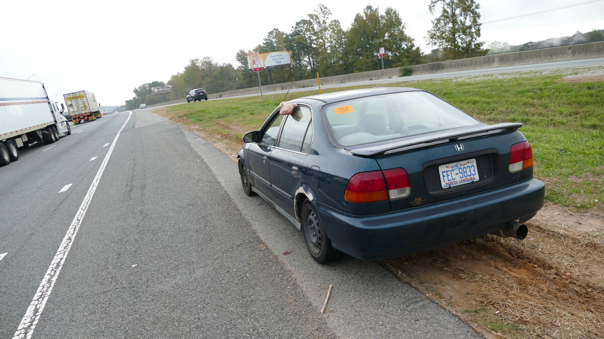

Changing a Flat Tire
Flat tires do not have to be a problem for a normal driver and can be easily fixed if you have the skills and tools.
Get StartedWhy Being Able to Change a Flat Tire is Important
Cost Savings
Calling roadside assistance can be very expensive. When your car has a spare, jack, and wrench you can change your tire for zero out of pocket cost.
Prevent Damage
Driving your car with a flat tire can be incredibly dangerous and make your car unstable. Additionally, driving on a flat can damage suspension components and the underside of your vehicle.
Driver Confidence
Calling roadside assistance can take time and requires you have cell service wherever you are. Knowing how to change a flat yourself can be a life saver and instills confidence in a driver.
Step-by-Step Tutorial
Steps 1-3: Find a flat area on the side of the road as soon as possible. Put your car into park. Engage the emergency/parking handbrake.

Step 4
Break the lug nuts loose while your car is still planted on the ground but do not take them off all the way. Then use your floor jack (Find the jacking point, often a small cutout or indent to show where to use your jack). When tightening the spare use a star pattern to allow the wheel to center on the hub.
Tools and Safety + Conclusion
Check your spare atleast once a year to make sure it has adequate tire pressure and also check to ensure that you have the proper tools for the job, spare, carjack, lug wrench.